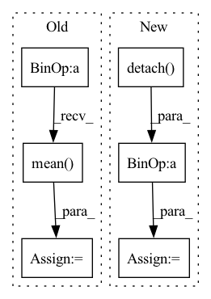

Pattern ID :38010

Before Change
breakpoint()
warped_imgs = homography_warp(img_batch, homography, ref_batch.shape[-2:])
// Compute new PSNR:
mse_per_example = ((warped_imgs.detach() - ref_batch)**2).view(B, -1).mean(dim=1)
registered_psnrs = 10 * torch.log10(factor**2 / mse_per_example)
// Return best of default and warped PSNR:
return torch.stack([default_psnrs, registered_psnrs]).max(dim=0)[0].mean()
After Change
homography = registrator.register(img, ref)
warped_img = registrator.warp_src_into_dst(img)
// Compute new PSNR:
mse = ((warped_img.detach() - ref_batch)**2).mean()
registered_psnrs += [10 * torch.log10(factor**2 / mse)]
// Return best of default and warped PSNR:
In pattern: SUPERPATTERN
Frequency: 3
Non-data size: 6
Instances
Fragment ID: 108859836
Project Name: jonasgeiping/breaching
Commit Name: 6b4ffc1d9faebf9b2f809f69b0ed4a9af670db47
Time: 2021-11-29
Author: jonas.geiping@googlemail.com
File Name: breaching/analysis/metrics.py
M Class Name: AnonimousClass
N Class Name: AnonimousClass
M Method Name: _registered_psnr_compute_kornia(3)
N Method Name: _registered_psnr_compute_kornia(3)
M Parent Class:
N Parent Class:
M File Name: breaching/analysis/metrics.py
N File Name: breaching/analysis/metrics.py
M Start Line: 80
M End Line: 94
N Start Line: 81
N End Line: 99
'>
Before Change
mean_entropy += m.entropy().mean()
log_prob += m.log_prob(actions_batch[..., idx])
policy_loss = (-log_prob[:-1] * normalized_advantages_batch).mean()
// Value objective.
returns_batch = torch.zeros_like(rewards_batch)
After Change
// Detach value_functions_batch from the computation graph
// for return and advantage computations.
value_functions_batch_detached = value_functions_batch.detach()
// Value objective.
returns_batch = torch.zeros_like(rewards_batch)
returns_batch[-1] = (
done_flags_batch[-1][:, None] * rewards_batch[-1]
+ (1 - done_flags_batch[-1][:, None]) * value_functions_batch_detached[-1]
)
for step in range(-2, -returns_batch.shape[0] - 1, -1):
future_return = (
done_flags_batch[step][:, None] * torch.zeros_like(rewards_batch[step])
+ (1 - done_flags_batch[step][:, None])
* self.discount_factor_gamma
* returns_batch[step + 1]
)
returns_batch[step] = rewards_batch[step] + future_return
// Normalize across the agents and env dimension
if self.normalize_return:
normalized_returns_batch = (
returns_batch - returns_batch.mean(dim=(1, 2), keepdim=True)
) / (returns_batch.std(dim=(1, 2), keepdim=True) + 1e-10)
else:
normalized_returns_batch = returns_batch
vf_loss = nn.MSELoss()(normalized_returns_batch, value_functions_batch)
// Policy objective
advantages_batch = (
normalized_returns_batch
- value_functions_batch_detached
)
// Normalize across the agents and env dimensions
'>
Fragment ID: 108859829
Project Name: salesforce/warp-drive
Commit Name: 6b18b856e39120e9a386038cb81ed9e6b61f48c0
Time: 2021-10-29
Author: sunil.srinivasa@salesforce.com
File Name: warp_drive/training/algorithms/a2c.py
M Class Name: A2C
N Class Name: A2C
M Method Name: compute_loss_and_metrics(6)
N Method Name: compute_loss_and_metrics(6)
M Parent Class:
N Parent Class:
M File Name: warp_drive/training/algorithms/a2c.py
N File Name: warp_drive/training/algorithms/a2c.py
M Start Line: 48
M End Line: 77
N Start Line: 49
N End Line: 99
'>
Before Change
fishers = []
for activation in activations:
fish = (
(int.data.detach() * int.grad.detach())
.sum(-1)
.sum(-1)
.pow(2)
.mean(0)
.sum()
)
fishers.append(fish)
After Change
for activation in activations:
print(activation)
fish = (
(activation.data.detach() * activation.grad.detach())
.sum(-1)
.sum(-1)
.pow(2)
'>
Fragment ID: 108859828
Project Name: jack-willturner/gymnastics
Commit Name: e3d570be27603ff985b0d572e52a75401749f7c0
Time: 2021-08-10
Author: jackwilliamturner@icloud.com
File Name: gymnastics/proxies/fisher.py
M Class Name: Fisher
N Class Name: Fisher
M Method Name: score(4)
N Method Name: score(4)
M Parent Class: Proxy
N Parent Class: Proxy
M File Name: gymnastics/proxies/fisher.py
N File Name: gymnastics/proxies/fisher.py
M Start Line: 24
M End Line: 31
N Start Line: 23
N End Line: 32